Roles#
Computation Roles#
Computation roles are used to manage user actions to a computation. On service start, builtin roles are created with their associated actions which can be assigned to a user on a particular computation. These builtin roles can be updated, deleted, and new ones added.
The following builtin roles are created on service initialization:
| Built-in Role | Actions |
|---|---|
| Owner | view, edit, run, administrator |
| AlgorithmProvider | view, algo_provider |
| DatasetProvider | view, dataset_provider |
| ResultConsumer | view, result_consumer |
| Viewer | view |
| Editor | view, edit |
| Runner | view, run |
Here’s an enhanced version of your Role Management documentation with additional explanations and clarity:
Role Management#
Overview#
Role management is a critical component of access control in computations. Each role defines a set of actions a user is permitted to perform, ensuring that users have only the necessary actions for their responsibilities.
A key constraint in the role system is that a user can only belong to a single role at a time. If multiple actions from different roles are required (e.g., both algo_provider and dataset_provider), an existing builtin role can be updated to include these actions, or a new custom role can be created with those combined actions.
Builtin roles provide the most basic roles with single actions that can be updated or added depending on the user's requirements.
Role Purpose in Computation Manifest#
Roles are essential in governing who can interact with a computation and how. In the computation manifest, assigned roles determine access to various resources, such as datasets, algorithms, and execution actions. Each role is mapped to a set of predefined actions that enforce security and operational boundaries within a computation.
Accessing Role Management#
To manage roles, follow these steps:
- Navigate to the Computations page.
- Click the New Computation button to create a computation.
- After creation, open the computation's Details page.
- Click the Roles button to manage user roles.
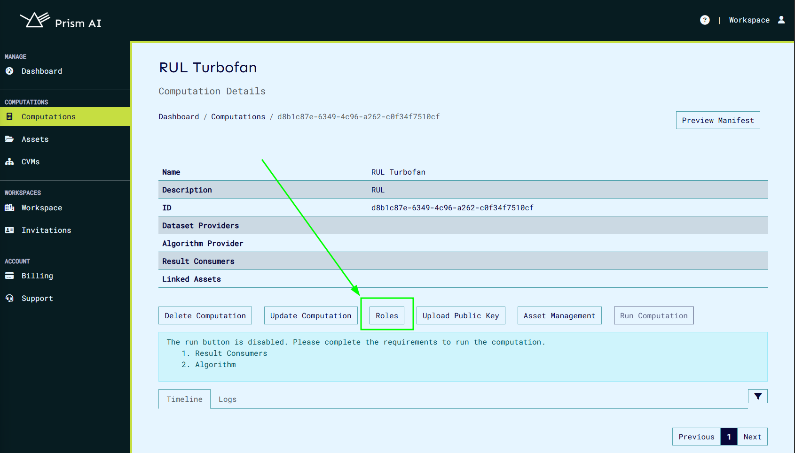
Clicking the Roles button will display all predefined built-in roles and their associated actions.
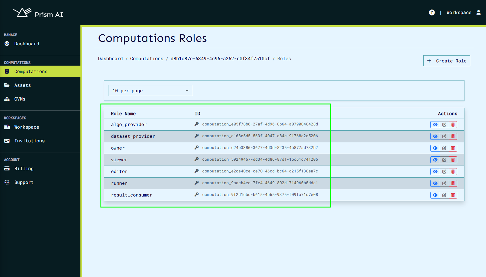
Built-in Roles and Their Actions#
The system provides predefined built-in roles, each granting specific access levels. The available built-in roles and their associated actions are:
| Built-in Role | Actions | Description |
|---|---|---|
| Owner | view, edit, run, administrator | Full control over the computation, including modifying roles and actions. |
| AlgorithmProvider | view, algo_provider | Provides algorithms but cannot edit or run computations. |
| DatasetProvider | view, dataset_provider | Provides datasets but cannot edit or execute computations. |
| ResultConsumer | view, result_consumer | Can view results but cannot modify or execute computations. |
| Viewer | view | Read-only access. |
| Editor | view, edit | Can modify computations but cannot execute them. |
| Runner | view, run | Can execute computations but cannot modify them. |
Explanation of Actions#
Each action in a role defines what the user can do:
- view – Allows the user to see computation details but not modify them.
- edit – Grants the ability to modify computation properties.
- run – Enables execution of a computation.
- administrator – Provides full control, including role management.
- algo_provider – Allows the user to contribute and manage algorithms.
- dataset_provider – Allows the user to contribute and manage datasets.
- result_consumer – Enables access to computation results.
Managing Roles#
Creating a Role#
To create a role, the following steps can be followed.
- Click the Create Role button.
- Define the role name and select the required actions.
- Save the role to make it available for assignment.
Updating a Role#
Existing roles can be modified if actions need to be adjusted.
- Click the Update Role button next to the role.
- Modify the role’s name or actions.
- Save the changes to update the role.
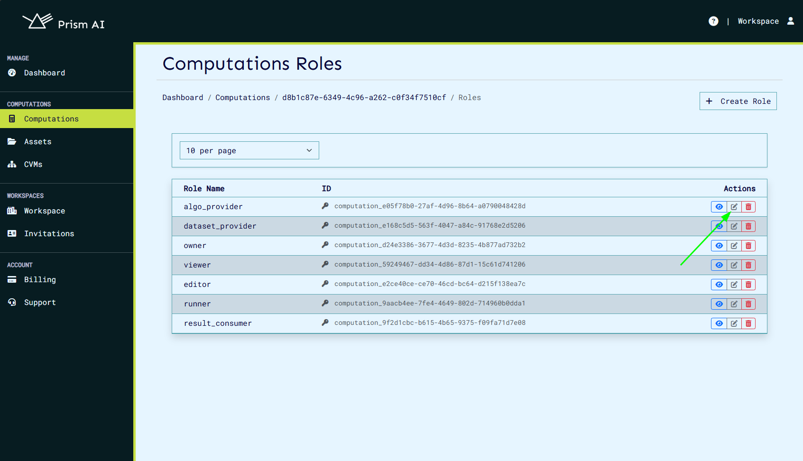
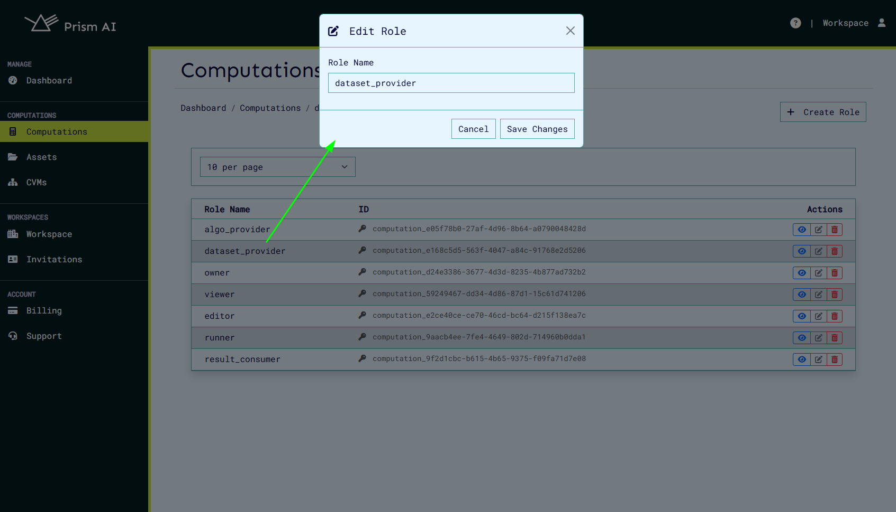
Viewing Role Details#
To see details about a role, including its assigned actions and members, click the View Role button.
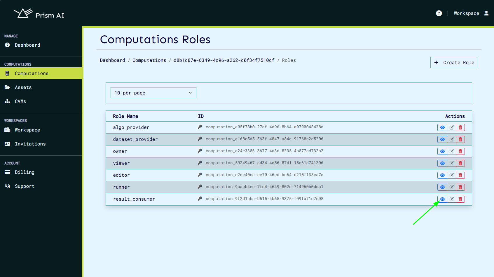
This will display:
- Role Actions – The actions assigned to the role.
- Role Members – A list of users assigned to this role.
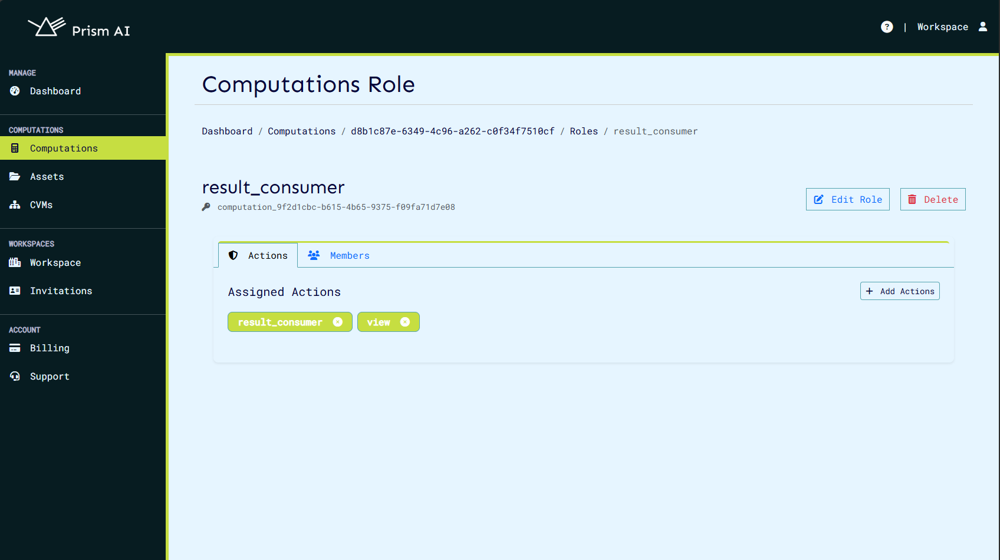
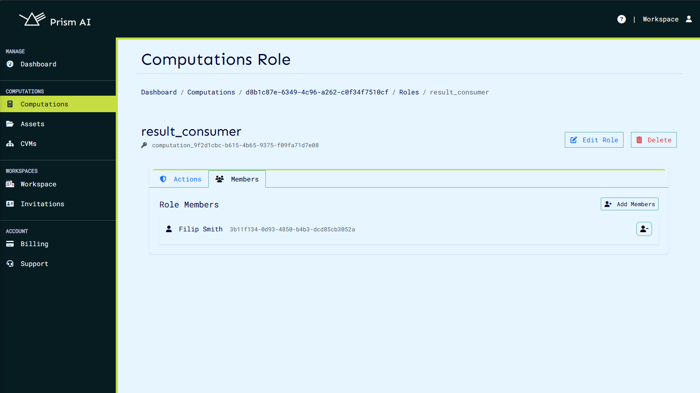
Managing Users in Roles#
Adding a User to a Role#
Since a user can only have one role at a time, ensure that the assigned role includes all necessary actions.
- Click the Add Members button.
- Select users to assign to the role.
- Confirm the selection.
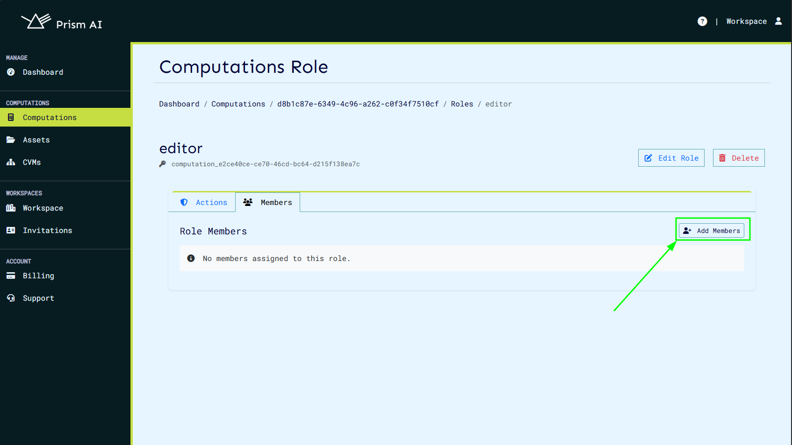
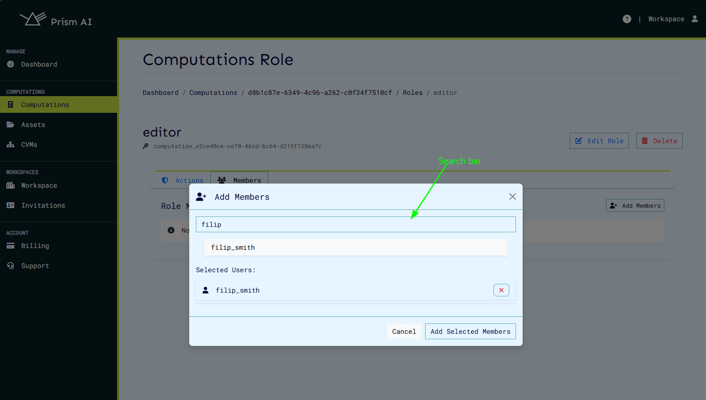
Removing a User from a Role#
To revoke access, remove a user from a role:
- Navigate to the role’s details page.
- Locate the user in the Role Members section.
- Click the Remove button.
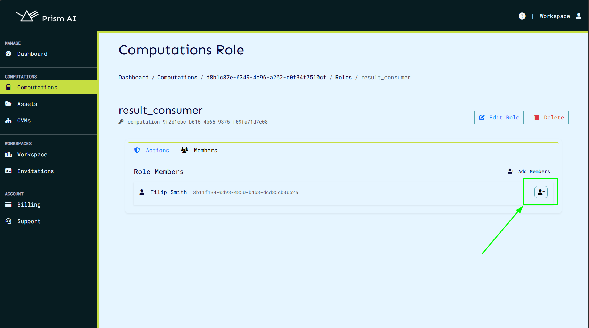
Deleting a Role#
Roles that are no longer needed can be removed. Note: Deleting a role will revoke access for all assigned users.
- Click the Delete Role button next to the role.
- Confirm the deletion.
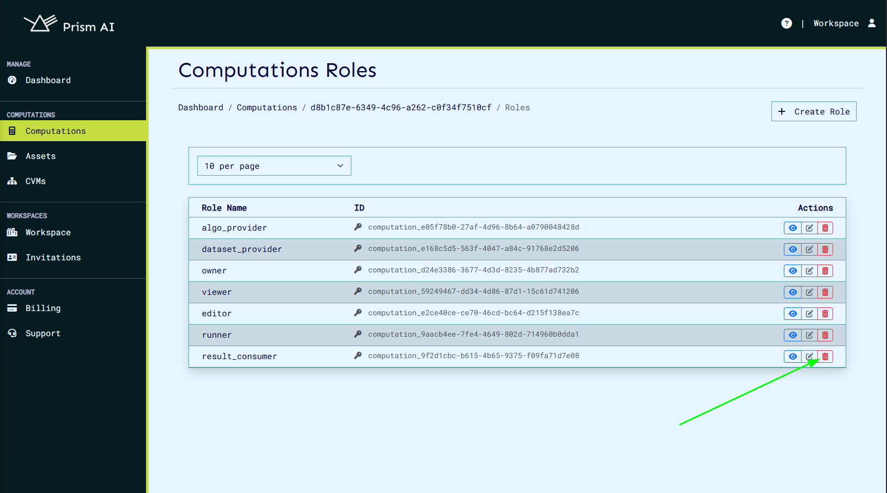